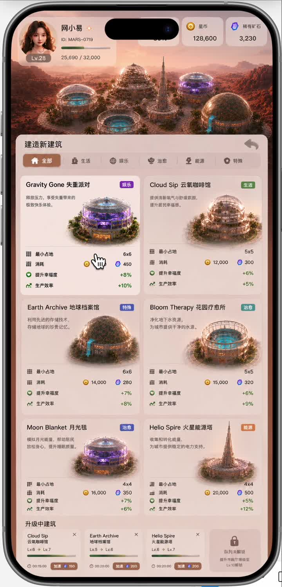
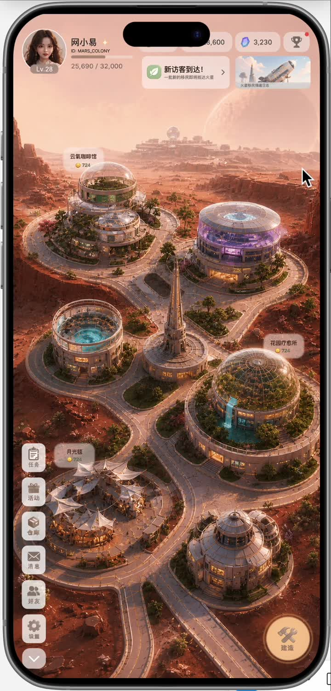
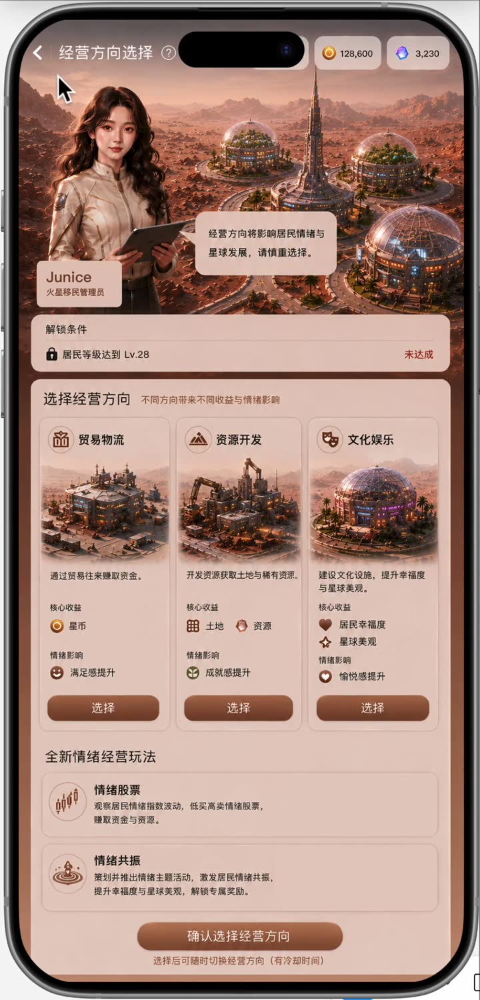
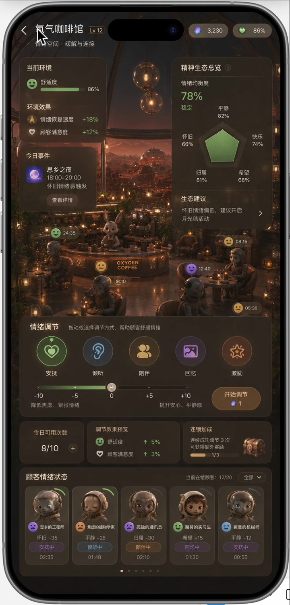
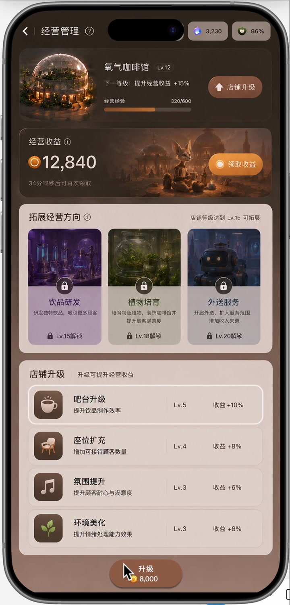
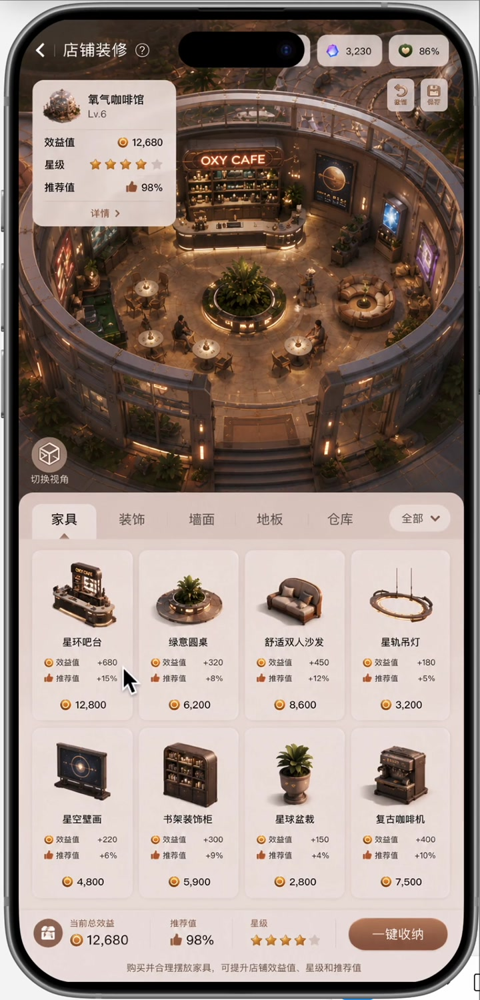
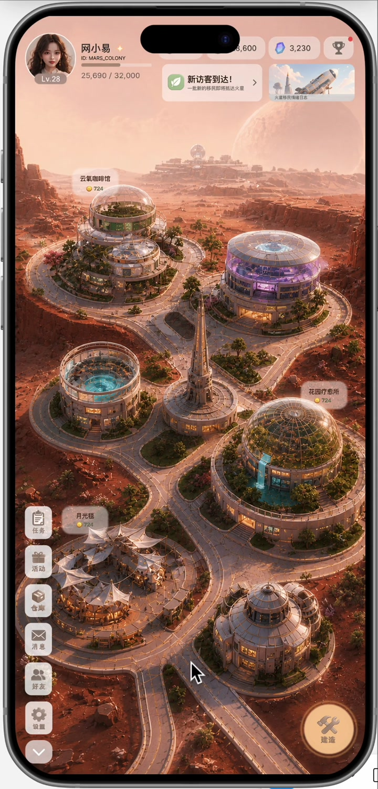

Emotional Value
The core goal shifts from maximizing revenue to maintaining a balanced spiritual and social ecosystem for colonists.
02 Simulation Game UI/UX
A Mars settlement management system where players operate buildings, resources, social spaces, and emotional well-being as part of one long-term colony loop.
01 Project Overview
The concept begins with the observation that Chinese players continue to seek relaxing, aesthetic, companionship-driven management games, but many products suffer from repetitive resource loops and weak late-game motivation. Mars Colony uses the isolation of space settlement as a new emotional context: oxygen, water, and energy matter, but so do loneliness, anxiety, nostalgia, and hope.
The core goal shifts from maximizing revenue to maintaining a balanced spiritual and social ecosystem for colonists.
The loop follows collection, building, unlocking, and expansion while keeping feedback frequent, gentle, and readable.
Players shape a personal Mars settlement through facility placement, decoration, social spaces, and long-term identity expression.
02 System Architecture
The main city view shows resources, missions, facility status, and visitor changes at a glance.
Players enter the construction flow, choose facility types, drag buildings, and select suitable land plots.
Buildings support shop management, emotional processing, staff management, and themed service directions.
Revenue collection, upgrades, decoration, NPC communication, and light social feedback create daily return motivation.

03 Key Experiences










04 Takeaway
This design does more than place a management game on Mars. It uses the isolation of space settlement to create a new motivation for long-term play: helping a human colony remain emotionally stable, socially connected, and personally expressive.